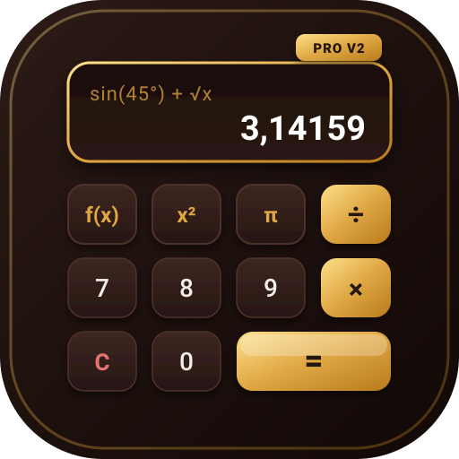
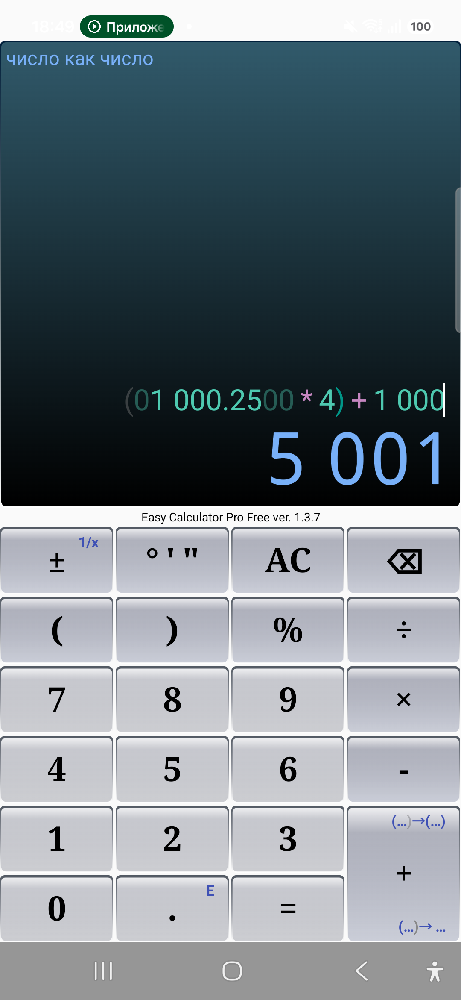
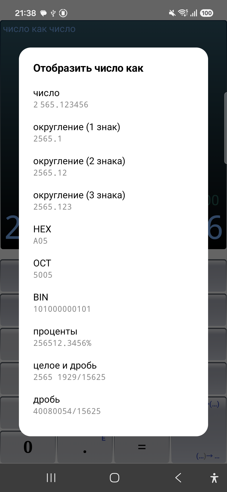
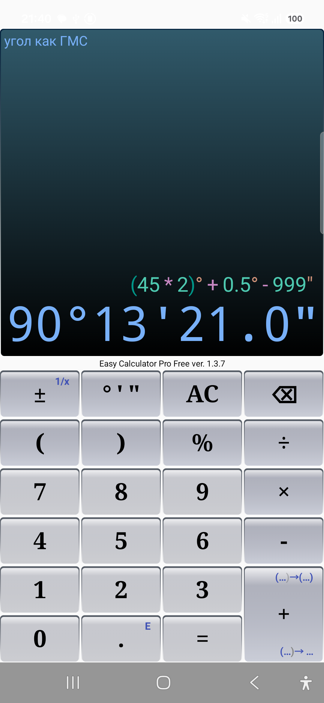
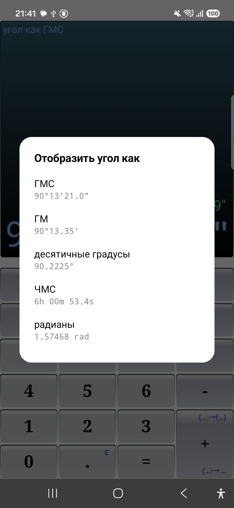
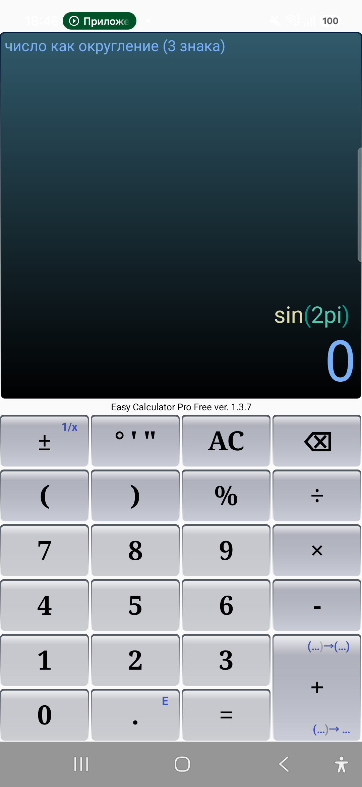
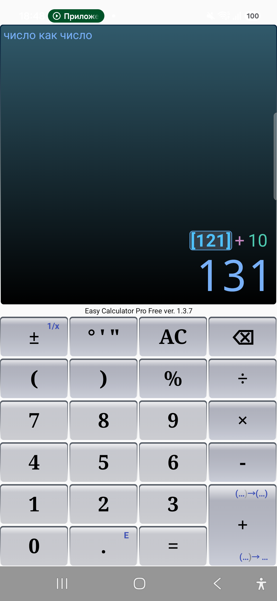
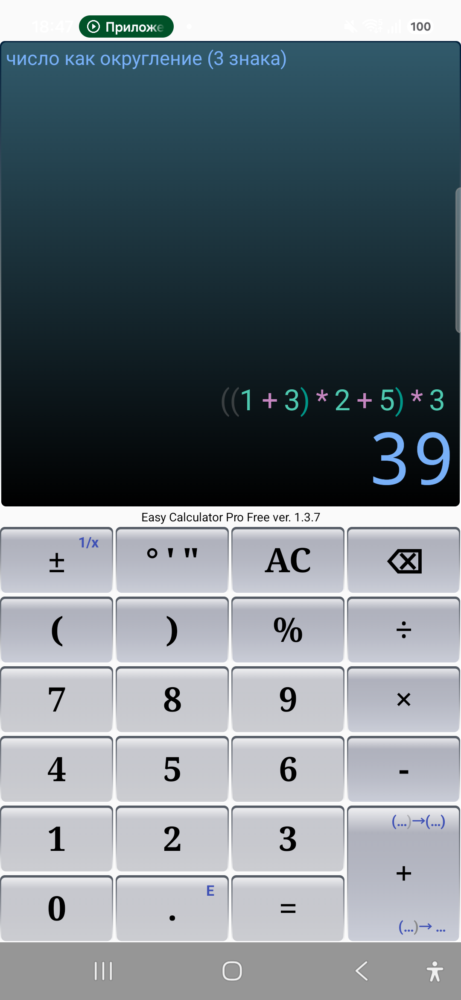
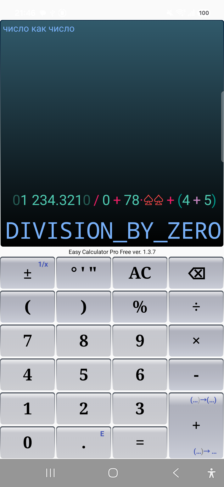

EasyCalcPro (v2.0) — фундаментальный архитектурный редизайн и полная переработка оригинального многофункционального калькулятора EasyCalcPro с нуля на Kotlin. Ядро приложения выделено в полностью изолированный высокопроизводительный математический движок с собственным компиляторным пайплайном (Lexer → Pratt Parser → AST Evaluator) и реактивным UI-слоем для решения сложных инженерных, геодезических и научных задач.
Очищенная строка ввода без декоративных пробелов — единый источник истины (Single Source of Truth) для расчета текстовых диапазонов (TextRange) и курсора.
Лексер тотальной раскраски. Даже при синтаксически неверном вводе (например, 5 + @)
неизвестный символ маркируется как UNKNOWN для подсветки цветом ошибки, не прерывая
процесс разбора. Градусы, минуты и секунды разбираются как самостоятельные токены для мгновенной
реакции «умной кнопки».
Дерево синтаксического разбора. Реализован легковесный Top-Down Operator Precedence (Pratt) парсер с тонкой настройкой уровней старшинства операций:
1/2π
однозначно и предсказуемо транслируются в 1 / (2 * π) непосредственно при построении
AST.Слой преобразования токенов для отображения. Если в AST узел помечен флагом
isFolded, группа токенов схлопывается в один компактный спец-токен капсулы
FOLDED_NODE(value). Здесь же работает механизм автобалансировки скобок.
Финальный продукт для отрисовки в кастомном BasicTextField: форматирование с тонкими
неразрывными пробелами в разрядах чисел, динамическая палитра токенов и плавная навигация курсора с
пропуском масок и учетом капсул.
Капсула — свернутая группа выражения (скобки, аргументы функций), вместо которой прямо в строке выводится ее промежуточное вычисленное значение:
(2+3)+ превращается в [5]+.«1.25M» → полно «1 250 000» → исходный текст
«(5 * 2500 * 100)».
10°45.5", .3E-3'45", 10'(1/4)" и ввод через одну «умную
кнопку».